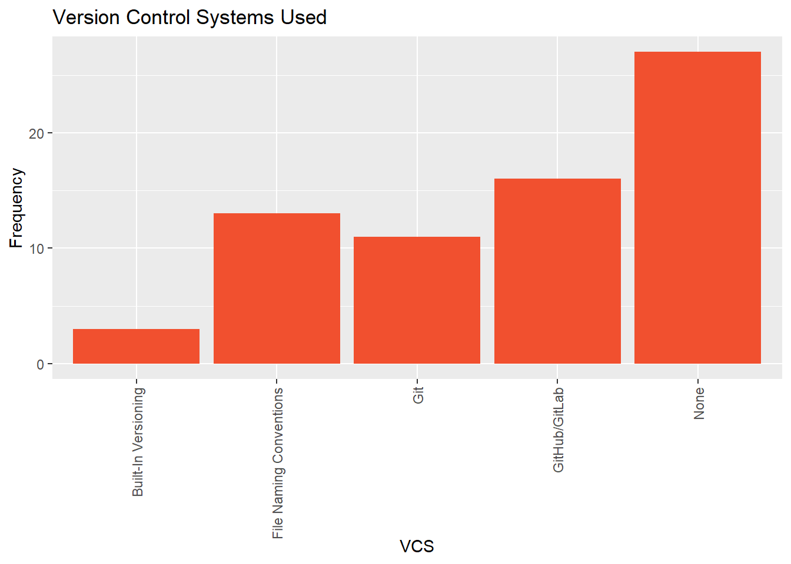
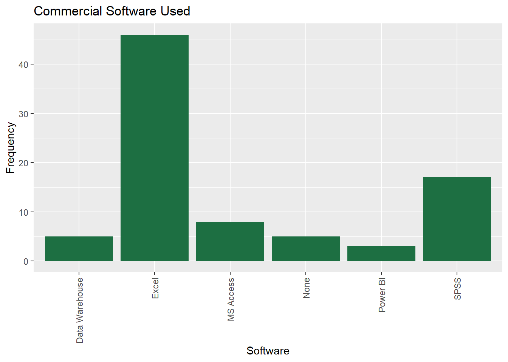
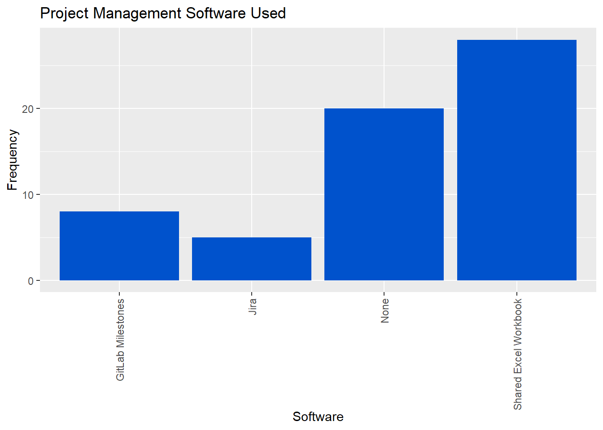
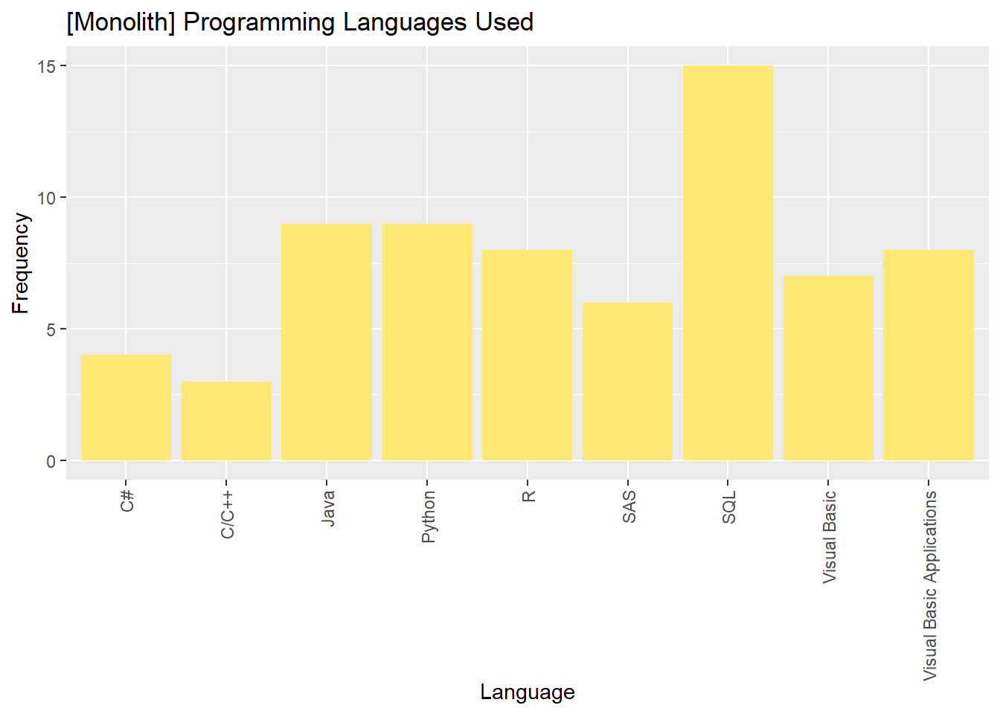
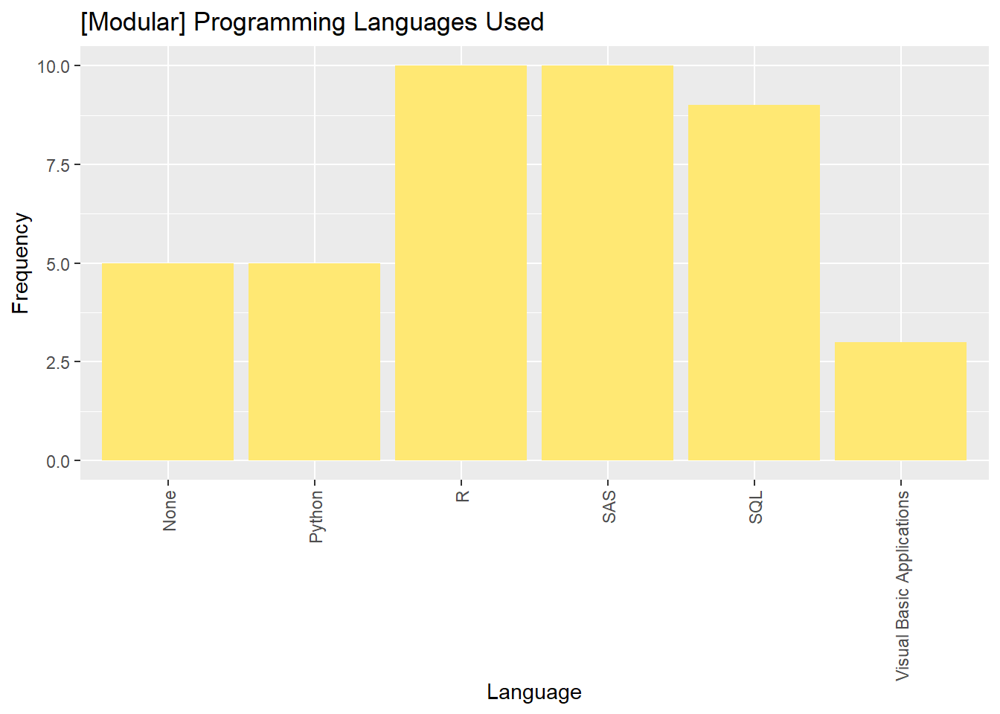
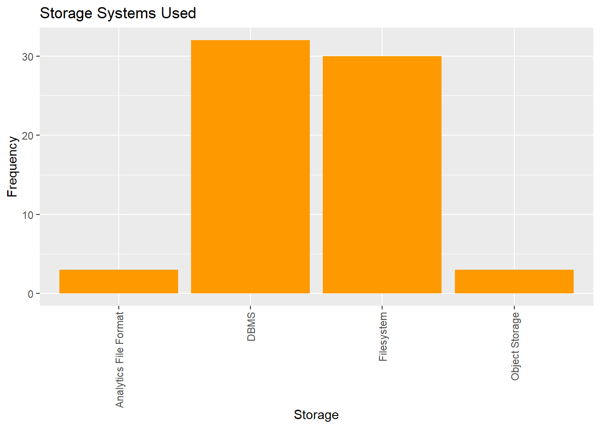
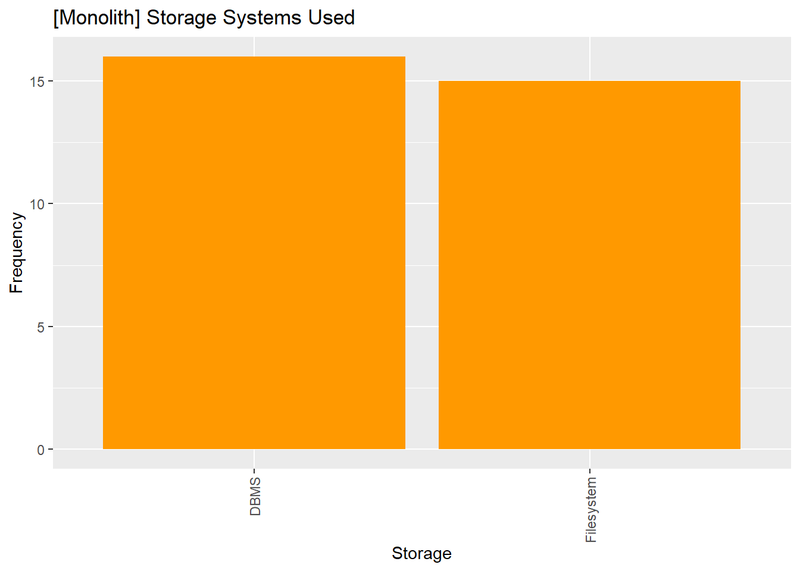
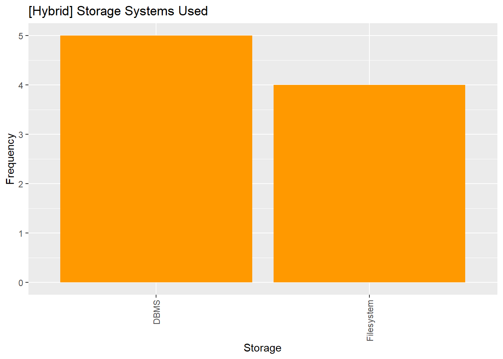
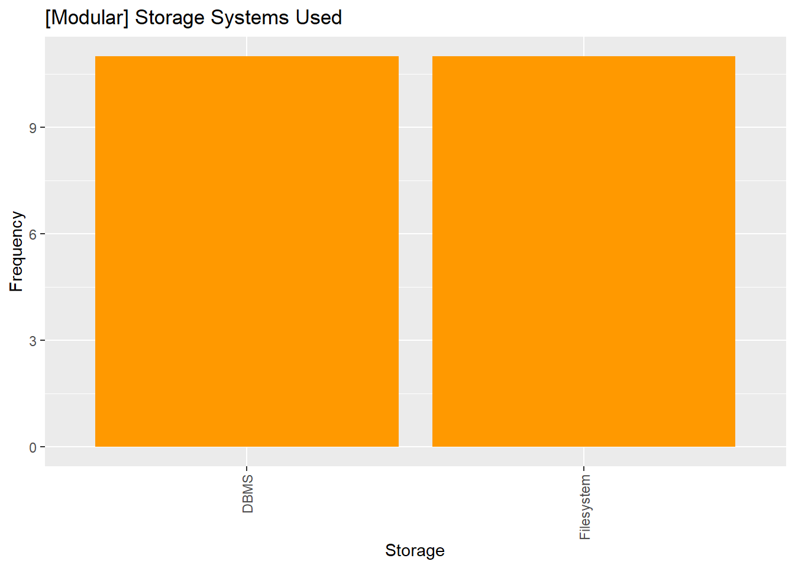

4 Tools and Technologies
In this section, we look at various tools and technologies in use by NSOs.
4.1 Version Control System Usage
Complex Analytical Systems, such as the systems used in monthly CPI Production, often need to synchronize and integrate multiple versions of related code, data, and documentation. This is especially important for creating reproducible analytical pipelines (NHS (2017)), or enabling multiple individuals to work concurrently on the same project.
Version Control Systems (VCS) are tools that systematically manage changes in a codebase over time. At the time of writing, Git is by far the most popular software for this purpose, and platforms such as Github and GitLab have built extensive functionality around projects managed with Git1.
Figure fig-vcs shows the VCS used by respondent NSOs.
Surprisingly, the most common response by far was that the respondent did not use version control software at all for their CPI Production Systems. In fact, almost two thirds of the sample claims to use no VCS whatsoever or file-naming conventions2.
Our hypothesis here is that (1) some commonly used file formats (e.g., Excel Workbooks) don’t lend themselves easily to well-established version control tools like Git and (2) a lack of familiarity with VCS tools in general.
Another interesting observation is that slightly less than one third of the sample uses Git and/or GitHub/GitLab3.
A very small fraction of the sample indicated using other version control software such as Mercurial, Subversion, or built-in versioning capabilities of another tool/platform.
Having both worked on non-trivial Complex Analytical Systems ourselves, we suspect that adopting industry standard VCS toolingap may greatly reduce the cognitive load for teams who are not currently using any VCS or are only using file-naming conventions to manage source code and documentation for Complex Analytical Systems4.
4.2 Commercial Software
The next question we asked was which commercial software (if any) is used in each respondent’s CPI Production systems.

We were not overly surprised to learn that over two thirds of the respondents listed that Microsoft Excel was used in their CPI Production Systems.
Microsoft Excel satisfies a number of use cases for beginner-friendly tabular data analysis, however, it is not an ideal tool for expressing business logic in Complex Analytical Systems5. Some of the key reasons for this include:
Excel Workbooks are stored in a binary format rather than a plain text format, which doesn’t integrate well with Version Control Systems.
There isn’t a well-defined entrypoint to an Excel Workbook (i.e., you can’t “run” an Excel workbook the same way you can “run”
python main.py).The business logic encoded into an Excel Workbook is often difficult to read and interpret for any non-trivial Workbook, making Excel Workbooks difficult to maintain as a unit of software.
Excel Workbooks encourage a high degree of coupling between business logic and data6.
In a distant second to Microsoft Excel, we find SAS is the next most commonly used commercial product in CPI Production Systems.
4.3 Project Management Software
We asked respondents which project management software they use to manage work done on their CPI Production Systems.
The exact set of features provided by project management software differ depending on the specific software used, but in general, this kind of software is used to plan and coordinate tasks, manage timelines, and track progress on work items.
We believe that using some purpose-built project management software for any non-trivial project is generally a good idea because it encourages a structure to the way projects are managed and it offers a way to reduce cognitive burden for project team members7.

The most common project management software reported was a shared Excel Workbook, with a bit less than half of respondents stating that they used this as their team’s primary means of project management.
Shared Excel Workbooks may be sufficient for keeping track of small tasks, but for any endeavour that requires managing code, data, and documentation changes across multiple individuals, this approach will lack a number of key features to facilitate the project management process.
The second most cited answer was not using any project management software whatsoever, with almost one third of respondents indicating this answer.
Given the complexity of CPI Production Systems, we were surprised to see so many individuals not using any project management software. For all but the simplest of initiatives, we believe there is significant value in adopting at least the basic features of some purpose-built project management software8.
Finally, just over twenty percent of the sample reported using either GitHub Projects, GitLab Milestones, or Jira as their primary software for project management.
4.4 Programming Languages
We asked respondents which programming languages are used to develop their CPI Production Systems. We found several observations noteworthy.

First, just under half of the respondents indicated that they use SQL in the development of their CPI Production Systems.
We suspect this answer reflects the fact that SQL still remains a very popular choice of language for expressing tabular data manipulations, as well as the fact that many organizations reported using some kind of database management system (DBMS) in their CPI Production Systems. Our suspicion is that SQL is most commonly used in the ingestion and processing steps in the flow of change9.
Second, we notice than more than ninety percent of the sample reported using at least one of Python, R, and SAS in their CPI Production Systems. Interestingly, less than one quarter of these users reported using Python and/or R but not SAS. In other words, it is quite common for SAS to be used in conjunction with Python and/or R rather than being used instead of Python and/or R.
Third, there are some differences in programming languages used between NSOs with monolithic representative systems and NSOs with modular representative systems.
The most noteworthy observation is that Java, C#, C/C++, Visual Basic, and Visual Basic Applications (VBA) are somewhat commonly used by NSOs with monolithic representative systems (almost two thirds) and almost never used by NSOs with modular representative systems (less than one quarter).
Additionally, we notice that slightly over one third of NSOs with monolithic representative systems report using R or SAS, while almost two thirds of NSOs with modular representative systems report using R or SAS.


4.5 Data Storage Tools
We conclude the Tools and Technology portion of the survey by asking which data storage tools are in use by respondents in their CPI Production Systems.




We were surprised by the following findings.
A very small percentage of the respondents reported using analytics optimized file formats such as Apache Parquet in their CPI Production Systems. There is a small learning curve associated with using these file formats, but they offer many benefits such as columnar storage on disk, data types supported natively by the file format, and a significantly smaller storage footprint due to columnar data compression strategies10.
There is an approximately equal split between the usage of Database Management Systems (DBMS) and file system storage, which is true across both NSOs with modular representative systems and NSOs with monolithic representative systems.
The small number of respondents who reported using something in addition to DBMS or filesystem storage all belonged to NSOs with modular or hybrid representative systems.
NHS. 2017. “Reproducible Analytical Pipelines (RAP).” https://nhsdigital.github.io/rap-community-of-practice/.
It is worth mentioning that git-adjacent software such as Data Version Control and Git Large File Storage exists to extend the versioning capabilities of Git to files you wouldn’t typically commit to a Git repository. However, this is a more advanced topic that we did not investigate in this survey.↩︎
What we mean by file naming conventions is encoding the author, version, and date information into the names of multiple files as the primary system of revision control. E.g.,
analysis_collin_v1.py,analysis_steve_v2.py,analysis_collin_v2_final_2025_03.py,analysis_steve_v2_final_FINAL_2025_04.py, and so on.↩︎We were surprised to find a small number of respondents indicated that they use Git but not a developer platform built around Git such as GitHub, GitLab, or BitBucket. We suspect that these individuals may work in an air-gapped network or similar situation without internet access and use Git locally without also using a tool like GitLab/GitHub.↩︎
We believe that most people working on CPI Production Systems have the aptitude to learn Git. However, we acknowledge that the learning curve for Git is non-trivial. Our recommendation to readers who are interested is to learn the basics and immediately put this knowledge into practice in your day-to-day activities. Over time, versioning files with Git will become second nature.↩︎
Our criticism here applies to all spreadsheet software, not just Microsoft Excel. Our point is that spreadsheet workbooks are not an ideal unit of software for expressing business logic in Complex Analytical Systems.↩︎
In other words, you can’t easily “reuse” a piece of business logic from someone else’s Excel Workbook in the way that you can reuse a piece of source code.↩︎
Note that we are not advocating for any specific project management software product. Rather, we are encouraging the use of any purpose-built project management software to facilitate managing non-trivial projects.↩︎
By “basic features”, we’re referring to capabilities such as task tracking, milestone tracking, and the ability to see which tasks each colleague is working on at any given time.↩︎
To minimize response burden, we did not ask respondents to enumerate programming languages used by GSBPM step, so we cannot say for sure in which step(s) SQL is used.↩︎
While there is a learning curve for some of the concepts involved, reading and writing to analytics-optimized file formats like Parquet is very easy due to the existence of many well-documented third party packages. For example, Python’s Pandas can read parquet files directly as long as an engine like
pyarroworfastparquetis also installed.↩︎